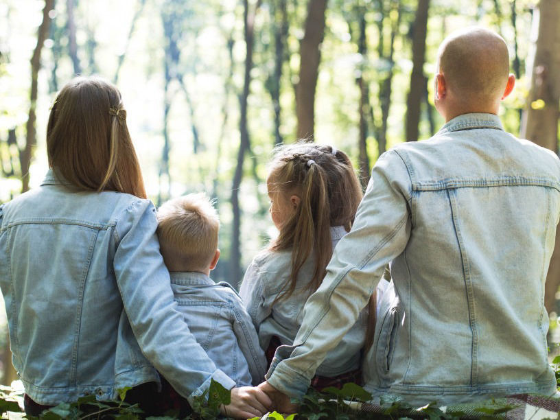

Publicações Recentes
Aborto: visões de um mar morto
Layane Araújo, 09/09/22
Bastante discutido atualmente, o tema aborto tem sido pauta de muitos noticiários e vem ganhando destaque cada vez maior nas mídias. Em virtude disso, é possível analisar várias opiniões divergentes, as....

Conflito entre gerações: rebeldia ou opressão?
Otávio Queiroz 13-14-2022
Desde de que nos entendemos por gente, a relação entre gerações é conturbada, marcada por expressões como: “ah, eu sou mais velho” ou “meus pais não me entendem”. Isso acaba sendo desgastante para a convivência...

200 anos de busca pela independência e pelo progresso
Sandro Filho, 07/09/22
Durante o século XVI, o território brasileiro foi dividido em um sistema de capitânias hereditárias, pois os portugueses tinham medo de perder as terras para outros europeus, que já estavam...